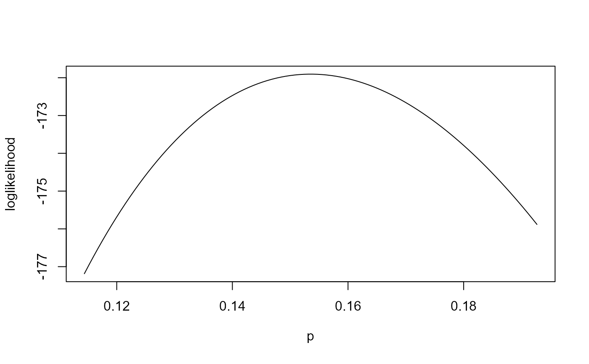
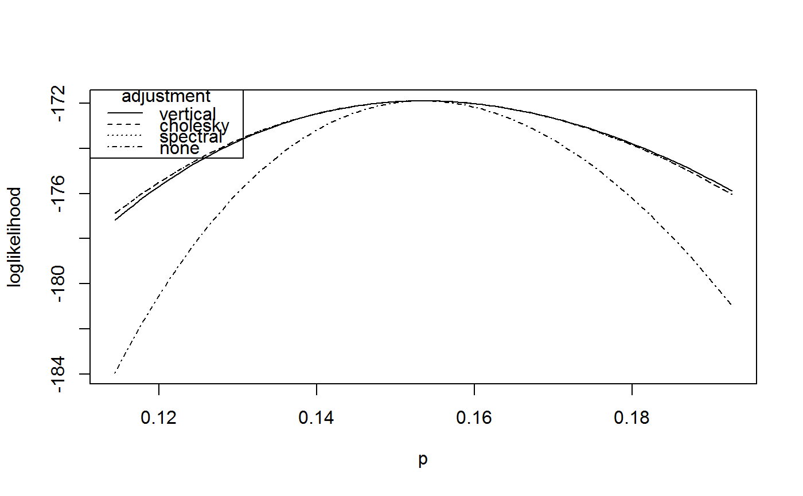
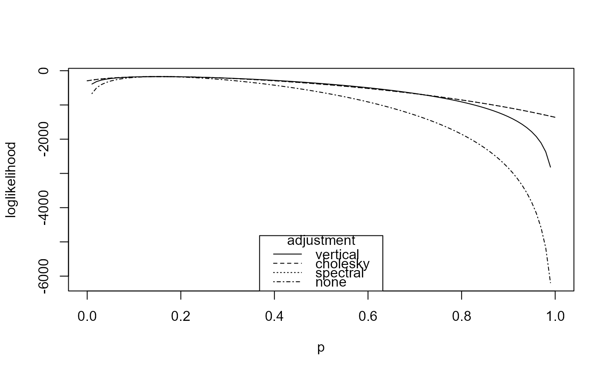

plot method for class "chandwich". Only applicable to an object
x for which attr(x, "p_current") = 1, i.e. a model with
one free parameter.
Arguments
- x
an object of class "chandwich", a result of a call to
adjust_loglik.- y
Not used.
- type
An integer vector, a subset of the numbers
1:4. Indicates which loglikelihoods to plot:1for"vertical"adjustment;2for"cholesky"(horizontal adjustment);3for"spectral"(horizontal adjustment);4for no adjustment, i.e. based on the independence loglikelihood.- legend
A logical scalar or a character vector. If this is supplied then a legend is added to the plot. If
legendis a character vector then it is used as the argumentlegendtolegend. Otherwise, i.e. iflegend = TRUEthen the argumenttypeis used.- legend_pos
The position of the legend (if required) specified using the argument
xinlegend.- ...
Additional arguments passed to
matplotorlegend. The argumentscol,ltyandlwdwill be used (in a consistent way) by bothmatplotandlegend.If the argument
xlimtomatplotis not supplied then the MLE minus (forlower) or plus (forupper) standard errors is used. Iftypedoes not include 4 then adjusted standard errors are used. Otherwise, the larger of the adjusted and unadjusted standard errors are used.
See also
adjust_loglik to adjust a user-supplied
loglikelihood function.
summary.chandwich for maximum likelihood estimates
and unadjusted and adjusted standard errors.
conf_intervals and plot.confint to
plot confidence intervals for individual parameters.
conf_region and plot.confreg to
plot a confidence region for a pair of parameters.
Examples
# ------------------------- Binomial model, rats data ----------------------
# Contributions to the independence loglikelihood
binom_loglik <- function(prob, data) {
if (prob < 0 || prob > 1) {
return(-Inf)
}
return(dbinom(data[, "y"], data[, "n"], prob, log = TRUE))
}
rat_res <- adjust_loglik(loglik = binom_loglik, data = rats, par_names = "p")
# Vertically adjusted loglikelihood only
plot(rat_res)

# Three adjusted loglikelihoods and the independence loglikelihood
plot(rat_res, type = 1:4)

# Plot over (0,1) and reposition the legend
plot(rat_res, type = 1:4, xlim = c(0, 1), legend_pos = "bottom")
